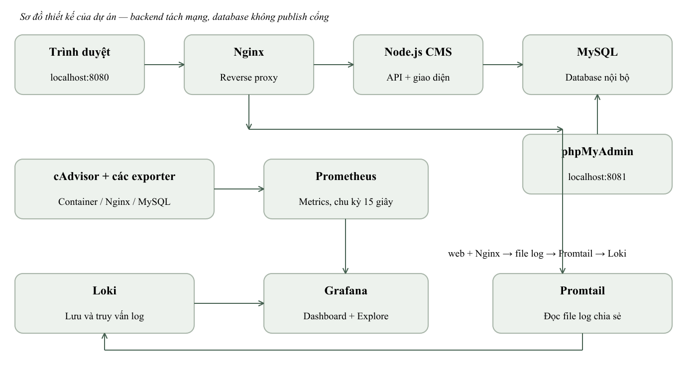
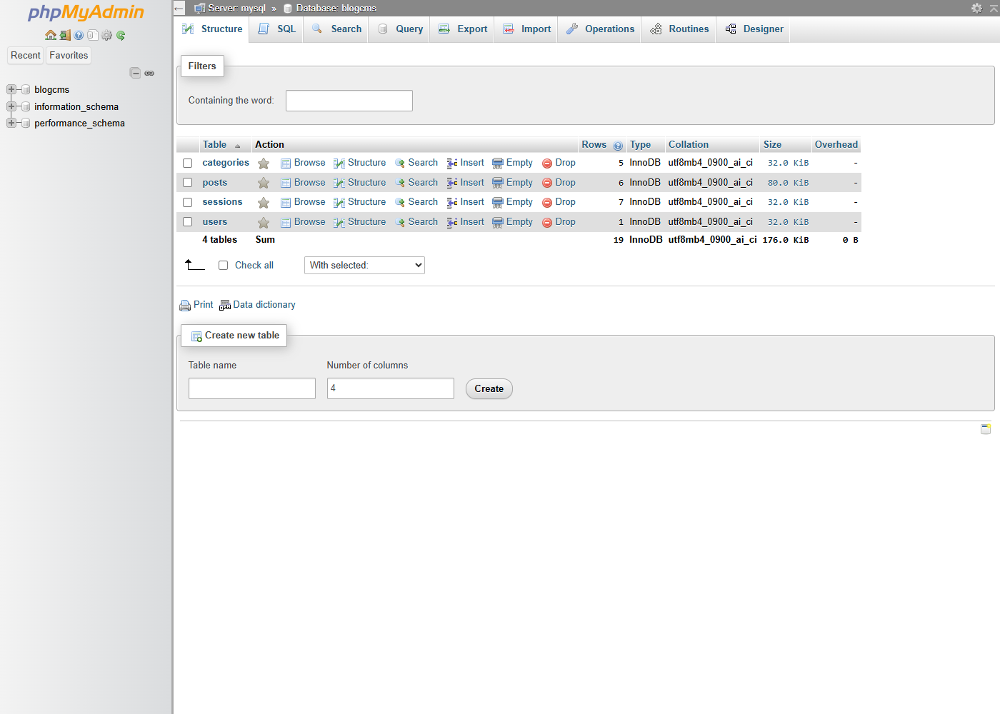
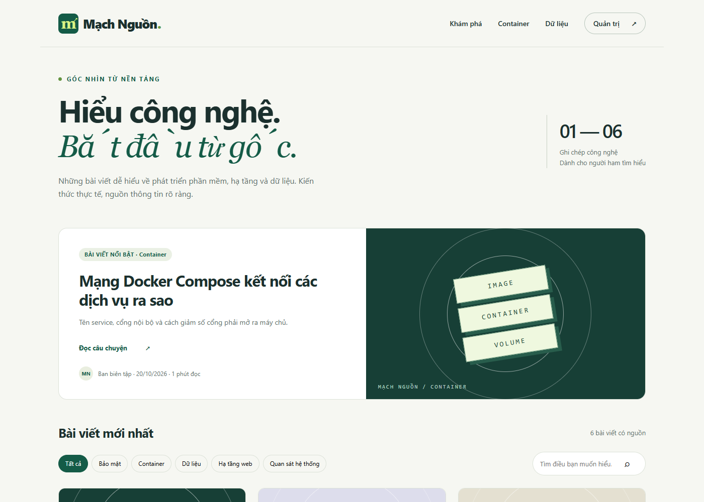
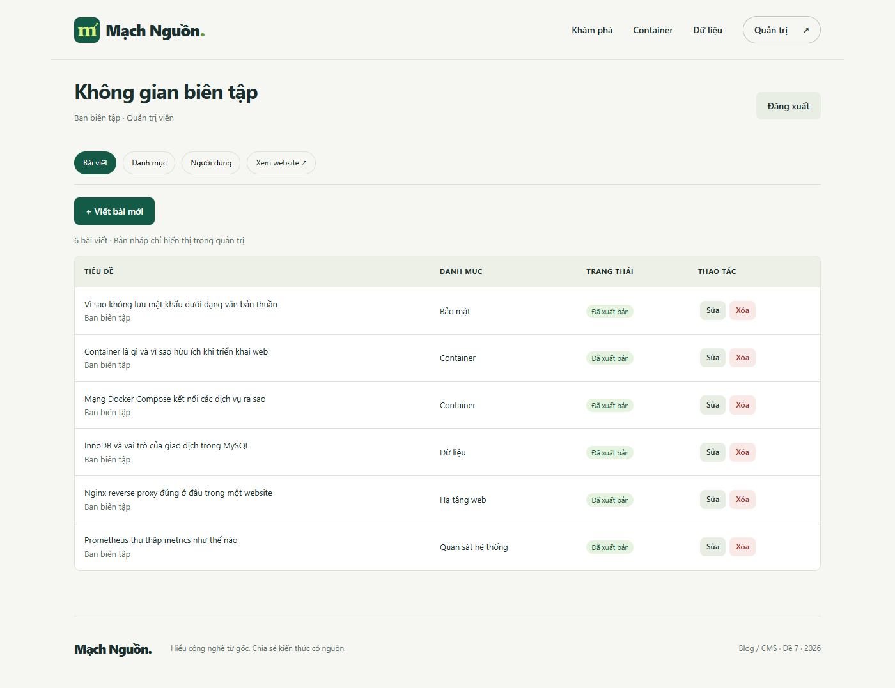
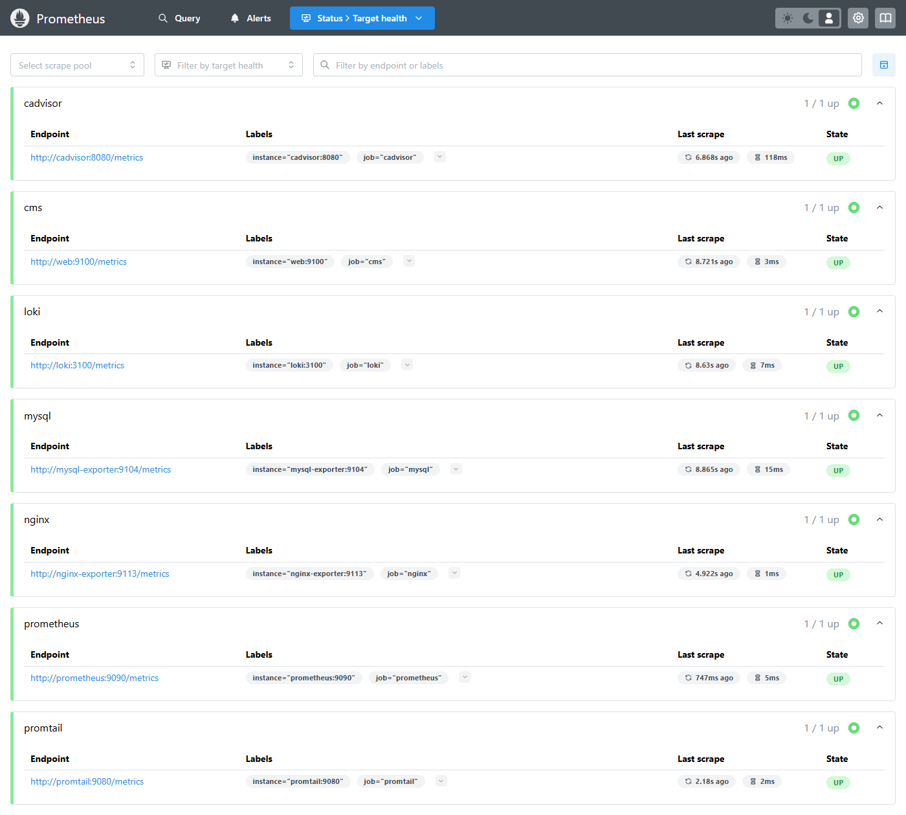
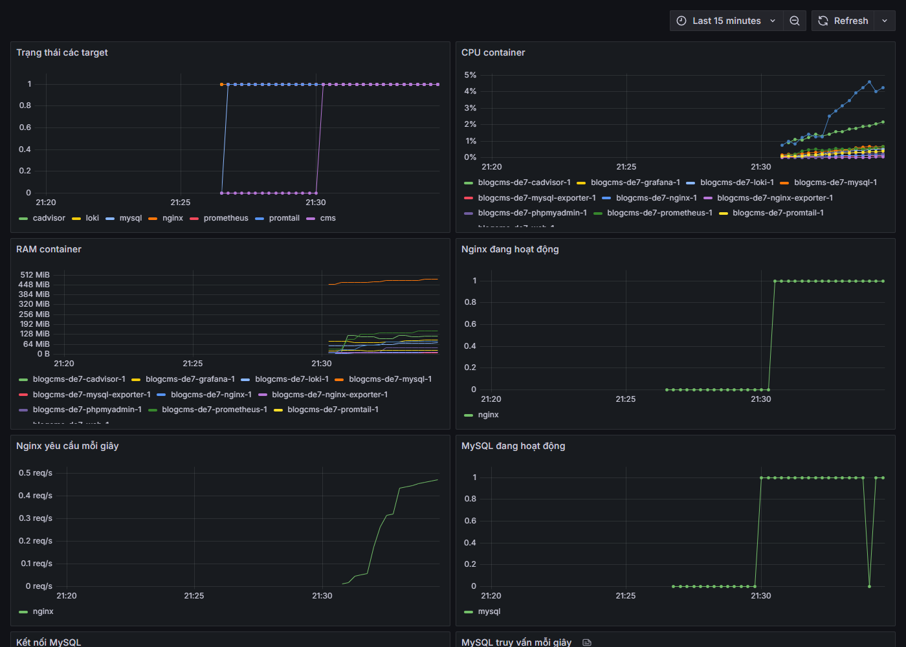
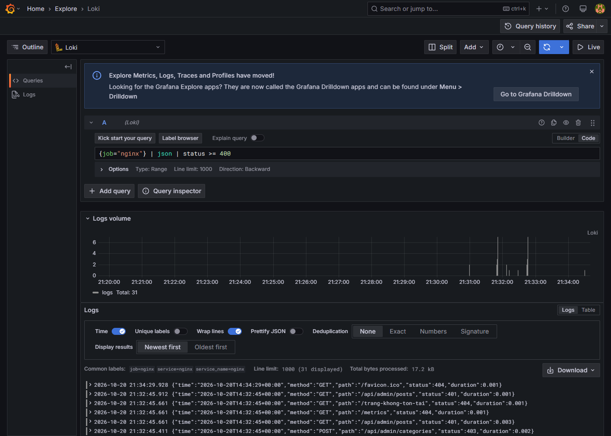

Báo cáo đề 7 Blog CMS[TÊN TRƯỜNG]
[KHOA / BỘ MÔN]
BÁO CÁO CHUYÊN ĐỀ HỌC PHẦN
TRIỂN KHAI VÀ QUẢN TRỊ
HỆ THỐNG PHẦN MỀM
ĐỀ 7
HỆ THỐNG BLOG CMS
Mạch Nguồn
Sinh viên thực hiện: [HỌ VÀ TÊN]
Mã sinh viên: [MÃ SỐ SINH VIÊN]
Lớp: [LỚP]
Giảng viên: [GIẢNG VIÊN]
Tháng 10 năm 2026
Lời mở đầu và phạm vi báo cáo
Đề tài số 7 xây dựng hệ thống Blog / CMS mang tên Mạch Nguồn. Sản phẩm cung cấp nơi đọc và quản trị bài viết công nghệ, đồng thời thực hành triển khai, giám sát, thu thập log và gia cố cấu hình bằng Docker Compose. Báo cáo mô tả cấu trúc mã nguồn, cách vận hành và kết quả kiểm thử trên môi trường Docker Desktop của bộ bàn giao.
Hệ thống sử dụng Node.js, MySQL và phpMyAdmin. Nginx đứng trước ứng dụng, Prometheus thu thập metrics, Grafana hiển thị dashboard, Loki lưu log và Promtail chuyển log từ các file dùng chung. Toàn bộ cấu hình nằm trong cùng dự án, có hướng dẫn mở bằng Visual Studio Code.
Phạm vi và kết quả chính
Website có đăng nhập, hai vai trò quản trị viên và biên tập viên, quản lý bài viết, danh mục, người dùng, tìm kiếm và phân trang. Sáu bài viết khởi tạo là nội dung kiến thức được biên soạn từ tài liệu chính thức và có đường dẫn nguồn. Ngày hiển thị trên bài là ngày khởi tạo/xuất bản trong CMS, không phải ngày phát hành tài liệu gốc.
Kiểm thử API đạt 30/30 kiểm tra; ba kiểm thử đơn vị đạt; bảy target Prometheus có dữ liệu. Truy vấn LogQL trả về log Nginx và sự kiện đăng nhập thất bại. Các hình trong báo cáo là ảnh chụp giao diện chạy thật; sơ đồ kiến trúc là hình mô tả thiết kế.
Mục lục
| Nội dung | Trang |
|---|
| Bìa và phạm vi báo cáo | 1–2 |
| Kiến trúc và mô hình dữ liệu | 3–4 |
| Chức năng CMS và triển khai Compose | 5–6 |
| Nginx và hệ thống giám sát | 7–9 |
| Log tập trung và hardening | 10–11 |
| GitHub, kiểm thử và vận hành | 12–14 |
Thông tin sinh viên, lớp, giảng viên và URL repository cần được điền bằng thông tin thực tế trước khi nộp. Báo cáo không sử dụng danh tính của sinh viên trong file tham khảo.
Chương I Kiến trúc tổng thể
Dự án được tổ chức thành 11 dịch vụ. Người đọc truy cập Nginx qua cổng 8080; Nginx chuyển yêu cầu sang web ở cổng 3000. Ứng dụng xử lý nghiệp vụ rồi truy vấn MySQL bằng tài khoản cms_app. Giao diện tĩnh và API được phục vụ cùng origin để đơn giản hóa việc quản lý cookie và CSRF.

Hình 1. Kiến trúc thiết kế của hệ thống Blog CMS
| Nhóm | Dịch vụ và nhiệm vụ |
|---|
| Ứng dụng | web, mysql, phpmyadmin, nginx |
| Giám sát | prometheus, grafana, cadvisor, nginx-exporter, mysql-exporter |
| Nhật ký | loki, promtail |
Mạng frontend nối web và Nginx. Mạng backend đặt internal để chứa MySQL cùng các dịch vụ được phép truy cập dữ liệu. Mạng monitoring phục vụ scrape, dashboard và logging. phpMyAdmin có thêm mạng tools để nhận kết nối từ cổng loopback trên máy cá nhân.
Database và các kho giám sát sử dụng named volume. Mã nguồn, dashboard và cấu hình là file trong repository; dữ liệu phát sinh và mật khẩu là trạng thái triển khai nằm ngoài Git. Cách phân tách này cho phép build lại ứng dụng mà vẫn giữ dữ liệu người dùng.
Mô hình dữ liệu và công cụ quản trị
Cơ sở dữ liệu blogcms sử dụng InnoDB với bốn bảng. Khóa chính số nguyên xác định người dùng, danh mục và bài viết. Bảng sessions lưu phiên đăng nhập ở database để việc khởi động lại container web không tự làm mất toàn bộ phiên còn hạn.
| Bảng | Thông tin chính |
|---|
| users | Tên, email duy nhất, password_hash, role, created_at |
| categories | Mã danh mục và tên duy nhất |
| posts | Tiêu đề, slug, tóm tắt, nội dung, tác giả, danh mục, trạng thái và nguồn |
| sessions | Mã phiên, dữ liệu JSON, thời điểm hết hạn |

Hình 2. phpMyAdmin đăng nhập bằng cms_app và hiển thị schema blogcms
posts.author_id tham chiếu users.id; posts.category_id tham chiếu categories.id. ON DELETE RESTRICT ngăn xóa tác giả hoặc danh mục khi còn bài viết. Chỉ mục trên status và published_at hỗ trợ trang liệt kê bài đã xuất bản. Slug tạo từ tiêu đề kèm hậu tố ngẫu nhiên và có ràng buộc UNIQUE.
Tài khoản cms_app chỉ có SELECT, INSERT, UPDATE và DELETE trong blogcms. Khởi tạo cấu trúc được thực hiện bằng script quản trị trước khi ứng dụng chạy. Exporter dùng tài khoản riêng có giới hạn ba kết nối; root chỉ dùng qua kết nối quản trị cục bộ trong container.
Chức năng website và quy trình biên tập
Trang công khai hiển thị bài đã xuất bản, tóm tắt, danh mục, tác giả, ngày xuất bản và thời lượng đọc ước tính. Ô tìm kiếm lọc tiêu đề hoặc tóm tắt. Các nút danh mục và phân trang được phản ánh trong URL để có thể tải lại hoặc chia sẻ kết quả.

Hình 3. Giao diện công khai Mạch Nguồn
Trong khu quản trị, tác giả có thể lưu bản nháp trước khi xuất bản. Bản nháp không được API công khai trả về. Quản trị viên quản lý toàn bộ bài viết và tạo tài khoản; biên tập viên chỉ sửa hoặc xóa bài do chính mình tạo. Phân quyền được kiểm tra ở máy chủ trên mỗi thao tác, không chỉ ẩn nút ở giao diện.

Hình 4. Danh sách bài viết trong không gian biên tập
Nội dung dùng văn bản thuần và được escape trước khi đưa vào HTML. Nguồn tham khảo chỉ chấp nhận giao thức HTTP hoặc HTTPS. Các bài khởi tạo gồm container, mạng Compose, reverse proxy, InnoDB, Prometheus và lưu mật khẩu; người đọc có thể mở tài liệu gốc ở cuối mỗi bài.
Chương II Triển khai bằng Docker Compose
Môi trường chạy cần Docker Desktop với Linux engine, Docker Compose, Git và VS Code. Windows sử dụng WSL2; không cần cài riêng Node.js hoặc MySQL trên host. Dự án dùng image Node để build ứng dụng và các image dịch vụ theo tag được khai báo trong compose.yaml.
Trình tự triển khai
powershell -ExecutionPolicy Bypass -File .\scripts\setup.ps1
docker compose config --quiet
docker compose up -d --build
docker compose ps
Script setup tạo .env và secrets/exporter.cnf bằng bộ sinh số ngẫu nhiên của hệ điều hành. Mỗi mật khẩu triển khai gồm 48 ký tự hexadecimal. File .env.example chỉ mô tả các biến; người dùng không cần tự nghĩ mật khẩu mẫu hoặc sửa trực tiếp mật khẩu trong source.
MySQL chạy schema.sql và script cấp quyền ở lần khởi tạo volume trống. Healthcheck kiểm tra kết nối TCP bằng cms_app tới bảng users, nhờ đó không nhầm server tạm trong quá trình init với server sẵn sàng. web chỉ khởi động sau khi MySQL healthy; Nginx chờ web healthy.
| Địa chỉ localhost | Mục đích |
|---|
| 8080 | Blog và quản trị CMS tại /quan-tri |
| 8081 | phpMyAdmin với user cms_app |
| 3000 | Grafana với user admin |
| 9090 | Prometheus và trang targets |
Cách chỉnh sửa trong VS Code
Sửa giao diện ở app/public, nghiệp vụ ở app/src, database ở db. Sau khi đổi mã ứng dụng, chạy docker compose up -d --build web và kiểm tra lại website. Nếu container web đổi địa chỉ IP nội bộ, khởi động lại Nginx để phân giải lại upstream. Tác vụ khởi động, dừng, xem trạng thái và xem log có sẵn trong .vscode/tasks.json.
docker compose down dừng và gỡ các container nhưng giữ named volume. Thêm -v sẽ xóa dữ liệu; lệnh này chỉ được dùng khi chủ động xóa môi trường thử sau khi sao lưu. Sửa .env không tự thay mật khẩu đã được tạo trong database hoặc tài khoản quản trị.
Nginx reverse proxy và security headers
Nginx chạy bằng UID 101, lắng nghe cổng 8080 để không cần quyền bind cổng đặc quyền. Upstream app trỏ tới web:3000. Cấu hình chuyển tiếp Host, X-Real-IP, X-Forwarded-For và X-Forwarded-Proto; địa chỉ client được lấy từ kết nối tới Nginx, không tin trực tiếp header do người dùng gửi.
upstream app { server web:3000; }
location / {
include /etc/nginx/proxy-common.conf;
proxy_pass http://app;
}
| Header | Giá trị hoặc mục đích |
|---|
| X-Content-Type-Options | nosniff |
| X-Frame-Options | DENY |
| Referrer-Policy | strict-origin-when-cross-origin |
| Permissions-Policy | Tắt camera, microphone và geolocation |
| Content-Security-Policy | Chỉ tải tài nguyên từ self; chặn object và iframe nhúng trang |
Nhánh yêu cầu được lựa chọn là security headers cơ bản. Bộ lab dùng HTTP tại loopback và chưa triển khai HTTPS. Vì vậy cookie Secure đang tắt; khi đưa ra Internet phải thêm TLS và đổi COOKIE_SECURE=true. Security headers không mã hóa dữ liệu trên đường truyền.
Giám sát và giới hạn truy cập
Cổng 8081 bên trong container Nginx cung cấp stub_status cho Nginx Exporter, không publish cổng này ra host. Nó khác cổng 8081 trên host đang dành cho phpMyAdmin. Endpoint metrics của ứng dụng lắng nghe riêng ở 9100; truy cập /metrics qua website nhận 404.
Đường dẫn /api/login có giới hạn tốc độ ở Nginx và giới hạn theo cửa sổ thời gian trong ứng dụng. Body request giới hạn 100 KB. Access log ghi JSON với method, path, status và duration, không ghi mật khẩu hoặc body đăng nhập.
docker compose exec nginx nginx -t
# syntax is ok; test is successful
Kiểm thử tự động xác nhận response có CSP và X-Frame-Options=DENY. Lệnh nginx -t thành công với cấu hình trong bộ bàn giao.
Prometheus và các nguồn metrics
Prometheus scrape theo chu kỳ 15 giây. Cấu hình tách metric ứng dụng khỏi traffic công khai: web:9100 chỉ tham gia mạng nội bộ. cAdvisor theo dõi tài nguyên container; Nginx Exporter đọc stub_status; MySQL Exporter kết nối bằng tài khoản exporter riêng.

Hình 5. Các target trong Prometheus tại thời điểm kiểm thử
| Nhóm metric | Ví dụ |
|---|
| Khả dụng | up, mysql_up, nginx_up |
| Container | container_cpu_usage_seconds_total; container_memory_working_set_bytes |
| Web | nginx_http_requests_total; cms_http_requests_total |
| Database | mysql_global_status_threads_connected; mysql_global_status_questions |
| Độ trễ | cms_http_duration_seconds_bucket |
Kết quả xác nhận bảy target UP gồm cadvisor, cms, loki, mysql, nginx, prometheus và promtail. mysql_up=1 và nginx_up=1 cho thấy exporter đọc được thành phần phía sau, ngoài việc endpoint scrape hoạt động. cAdvisor trả về các chuỗi số liệu CPU/RAM container.
Ba alert rule theo dõi target mất liên lạc, MySQL không kết nối được và Nginx không đọc được trạng thái. Rule chỉ được đánh giá trong Prometheus; bộ lab chưa có Alertmanager để gửi email hay tin nhắn. promtool kiểm tra thành công file cấu hình và cả ba rule.
Grafana dashboard và diễn giải số liệu
Nguồn Prometheus và Loki được provision bằng file YAML. Dashboard được nạp từ file JSON trong repository, vì vậy người dùng không phải nhập datasource hoặc dựng từng panel bằng tay sau khi khởi động. Tài khoản admin lấy mật khẩu từ .env; đăng ký công khai và truy cập ẩn danh bị tắt.

Hình 6. Dashboard thật với CPU, RAM, Nginx và MySQL
rate(nginx_http_requests_total[5m])
mysql_global_status_threads_connected
rate(mysql_global_status_questions[5m])
Panel CPU dùng tốc độ tăng của counter CPU theo cửa sổ năm phút. RAM dùng working set bytes. Request rate và query rate thể hiện số thao tác mỗi giây; sau khi tạo traffic mới cần chờ đủ mẫu scrape. p95 HTTP là ước lượng từ histogram, không phải thời gian của mọi yêu cầu.
Các đoạn đường về 0 trong ảnh ghi lại thời điểm dịch vụ đang được khởi tạo hoặc khởi động lại trong kiểm thử. Đây là dữ liệu quan sát thực tế. Người vận hành cần xem thời gian, sự kiện triển khai và log cùng lúc, thay vì diễn giải mọi biến động như lỗi nghiệp vụ.
Loki Promtail và truy vấn LogQL
Ứng dụng ghi sự kiện JSON vào volume app-logs; Nginx ghi access.log và error.log vào volume nginx-logs. Promtail mount các volume ở chế độ chỉ đọc, gắn nhãn job cố định và gửi dữ liệu tới Loki. Thiết kế này không yêu cầu Promtail truy cập Docker socket.

Hình 7. Grafana Explore truy vấn log Nginx có mã phản hồi từ 400
{job="nginx"}
{job="nginx"} | json | status >= 400
{job="cms"} | json | event="login_failed"
Truy vấn thứ nhất lấy access log. Truy vấn thứ hai parse JSON rồi lọc lỗi client/server. Truy vấn thứ ba tìm đăng nhập thất bại. Kiểm thử đã tạo URL không tồn tại và một lần đăng nhập sai; cả ba truy vấn đều có dữ liệu trả về. File evidence/verification.json lưu mẫu kết quả.
Loki giữ log bảy ngày. App tự xoay file tại 10 MB, giữ một bản cũ; stdout Docker giới hạn ba file 10 MB. File Nginx cần bổ sung logrotate khi chạy dài ngày. Positions của Promtail nằm trên tmpfs, nên recreate có thể đọc lại file và gây trùng log.
Promtail đã hết hỗ trợ từ 02/03/2026 theo Grafana. Thành phần được giữ để đáp ứng đúng đề bài; kế hoạch vận hành thực tế cần chuyển sang Grafana Alloy. Bộ cấu hình hiện tập trung log web và Nginx; log các dịch vụ khác xem qua docker compose logs.
Chương III Hardening và giới hạn đặc quyền
Hardening được thực hiện ở nhiều lớp, gồm quyền tiến trình, mạng, tài khoản database và kiểm soát dữ liệu đầu vào. Không có một tùy chọn đơn lẻ nào bảo đảm an toàn cho toàn bộ hệ thống. Các biện pháp dưới đây có cấu hình cụ thể để kiểm tra lại.
| Biện pháp | Áp dụng và kiểm chứng |
|---|
| Non-root | web UID 1000; Nginx UID 101; Promtail UID 10001 |
| Quyền container | cap_drop ALL, no-new-privileges cho các dịch vụ thông thường |
| Filesystem | Web/Nginx/exporter/Promtail chỉ đọc, mở tmpfs/volume cần thiết |
| Mạng và cổng | backend internal; không publish MySQL; công cụ quản trị bind loopback |
| Quyền DB | cms_app chỉ SELECT, INSERT, UPDATE, DELETE trong blogcms |
| Xác thực | scrypt với salt riêng; cookie HttpOnly và SameSite Strict |
| Tầng API | CSRF, kiểm tra vai trò/tác giả, SQL tham số hóa, escape HTML |
| Tài nguyên | Giới hạn RAM, pids cho ứng dụng và chính sách log rotation |
docker compose exec web id
# uid=1000(node) gid=1000(node)
docker network inspect blogcms-de7_backend --format "{{.Internal}}"
# true
Tài khoản root từ xa của MySQL được loại bỏ; quyền quản trị vẫn dùng được qua socket cục bộ trong container. Phiên người dùng nằm trong MySQL và được xóa khi cập nhật tài khoản. Việc bỏ quyền hoặc xóa người dùng không chỉ dựa vào dữ liệu role đã lưu trong cookie.
Ngoại lệ cần hiểu
cAdvisor chạy privileged và đọc các đường dẫn host để thu thập metrics. Đây là ngoại lệ dành cho môi trường lab tin cậy, không được xem là một container đã hạn chế đặc quyền đầy đủ. MySQL và phpMyAdmin dùng entrypoint chính thức có các bước root. Mật khẩu trong .env là file văn bản được loại khỏi Git, chưa phải kho secrets mã hóa.
npm audit tại thời điểm kiểm thử báo 0 lỗ hổng cho dependency production của ứng dụng. Kết quả này không phải kiểm toán an ninh toàn hệ thống hoặc quét toàn bộ image. Trước vận hành công cộng vẫn cần cập nhật, quét image, TLS và kiểm tra cấu hình theo môi trường thực tế.
Quản lý mã nguồn và đưa lên GitHub
Repository chứa source, Dockerfile, Compose, Nginx, Prometheus, dashboard Grafana, Loki, Promtail, README và kiểm thử. File .gitattributes giữ line ending LF để script shell chạy được trong Linux container ngay cả khi chỉnh sửa trên Windows.
| Commit | Phạm vi thay đổi |
|---|
| 1 | Ứng dụng CMS, MySQL, phpMyAdmin, Nginx và security headers |
| 2 | Prometheus, Grafana, cAdvisor, Nginx Exporter và MySQL Exporter |
| 3 | Loki/Promtail, minh chứng, tài liệu vận hành và báo cáo |
Lịch sử được cung cấp trong source-history.bundle cùng bộ mã nguồn. Đây là lịch sử scaffold kỹ thuật với tác giả CMS Project Scaffold; sinh viên cần đọc, hiểu, cá nhân hóa và bổ sung commit của mình khi thực hiện tiếp. Không giả định rằng lịch sử này đã được đẩy lên tài khoản GitHub của sinh viên.
git clone .\source-history.bundle BlogCMS-Git
cd BlogCMS-Git
git log --oneline
git remote add origin https://github.com/TAI_KHOAN_MSSV/BlogCMS-De7.git
git push -u origin main
Sinh viên cần đăng ký hoặc sử dụng tài khoản GitHub có tên theo MSSV, tạo repository rỗng, thay đường dẫn ở lệnh remote và xác thực bằng tài khoản của mình. URL repository thật được điền vào bìa hoặc phần thông tin nộp bài sau khi push thành công. Các bước này chưa được thực hiện thay cho người dùng.
Nội dung loại khỏi Git
.env, secrets/exporter.cnf, node_modules, file backup và log được bỏ qua bằng .gitignore. .env.example không có mật khẩu thật. Không chụp ảnh mật khẩu và không ép thêm file secret bằng git add -f. Nếu lộ secret, cần đổi secret; chỉ xóa file khỏi commit mới không xóa được lịch sử cũ.
Gói ZIP không chứa thông tin đăng nhập của phiên chạy kiểm thử. Khi người nhận giải nén ở máy khác, script setup sinh bộ mật khẩu mới. Named volume đang chạy trên máy kiểm thử không phải là một phần của repository; bài viết mặc định được tái tạo từ seed.json trong lần khởi động đầu.
README mô tả đầy đủ địa chỉ truy cập, lệnh chạy, cách xem mật khẩu cục bộ, truy vấn LogQL, kiểm tra hardening và khắc phục sự cố để giảng viên có thể tái hiện bài thực hành.
Kết quả kiểm thử và đối chiếu tiêu chí
Kiểm thử được chạy trên Docker Desktop Linux engine ngày 20/10/2026. API test đi qua Nginx và MySQL thật. Trình duyệt kiểm tra trang công khai, đăng nhập, giao diện quản trị, nguồn bài viết và bố cục ở độ rộng 390 px. Dữ liệu thử có tiền tố QA được xóa sau khi test hoàn tất.
| Hạng mục | Kết quả đã ghi nhận |
|---|
| Ứng dụng và DB | Health qua Nginx trả database=connected; có 6 bài khởi tạo |
| API | 30/30 kiểm tra đạt, có CRUD và kiểm tra từ chối truy cập |
| Đơn vị | 3/3 kiểm thử hash, nguồn URL và dữ liệu bài viết đạt |
| Nginx | nginx -t đạt; security headers được xác nhận |
| Prometheus | 7/7 target UP; mysql_up=1; nginx_up=1 |
| Grafana | Dashboard có dữ liệu; datasource được provision |
| Loki | 3 truy vấn LogQL trả về log thật |
| Trình duyệt | Không có page error; không tràn ngang ở độ rộng 390 px |
| Dependency | npm audit production báo 0 lỗ hổng tại thời điểm chạy |
Kiểm thử bảo mật chức năng
Người chưa đăng nhập bị từ chối ở API quản trị. Request thiếu CSRF token trả 403. Biên tập viên không sửa bài của tác giả khác và không quản lý người dùng/danh mục. Bài nháp trả 404 trên API công khai. URL nguồn javascript bị từ chối; chuỗi thử SQL injection được xử lý như dữ liệu tìm kiếm.
Cập nhật mật khẩu làm phiên hiện tại của tài khoản mất hiệu lực. Đăng xuất ngăn tiếp tục dùng API quản trị. Xóa danh mục còn bài bị khóa ngoại chặn. Các trường hợp này kiểm tra hành vi thực tế thay vì chỉ kiểm tra việc xuất hiện nút trong giao diện.
Phần sinh viên hoàn thiện trước khi nộp
Điền thông tin bìa, tạo/push repository GitHub theo MSSV, chụp lịch sử commit trên tài khoản của mình và thực hiện demo tại máy nộp bài. Các ảnh có sẵn là minh chứng của bộ triển khai bàn giao, không phải bằng chứng rằng máy khác đã được cài thành công. Chưa có kiểm thử tải lớn, kiểm toán xâm nhập hoặc triển khai Internet.
Vận hành sao lưu và hướng phát triển
Script backup.ps1 dùng mysqldump với single-transaction, ghi file UTF-8 trong container rồi copy ra thư mục backups. Cách này tránh việc redirect bằng PowerShell cũ làm đổi encoding SQL. Backup phải được giữ riêng vì chứa dữ liệu người dùng và hash mật khẩu.
powershell -ExecutionPolicy Bypass -File .\scripts\backup.ps1
docker compose logs --tail=100 web mysql
docker compose down
Trước restore cần xác nhận đúng database đích và thử ở một môi trường riêng. Không xóa volume để xử lý lỗi đăng nhập nếu có dữ liệu cần giữ. Đổi mật khẩu đã triển khai phải đồng bộ giữa database, ứng dụng và exporter; thay .env đơn thuần không đủ.
Giới hạn và hướng phát triển
Cấu hình hiện phù hợp thực hành trên một máy. Các bước tiếp theo gồm TLS với chứng chỉ hợp lệ, chuyển Promtail sang Alloy, positions bền vững, logrotate cho Nginx, quét image, thông báo qua Alertmanager và kiểm thử khôi phục định kỳ. Có thể bổ sung lịch xuất bản, ảnh đại diện và trình soạn thảo có bộ lọc HTML khi mở rộng nghiệp vụ.
Tài liệu tham khảo chính thức
Các nguồn dưới đây dùng cho nội dung blog và đối chiếu công nghệ; truy cập ngày 20/10/2026. Nội dung báo cáo về cấu hình và kết quả kiểm thử dựa trên các file của dự án.
Docker — Containers
Docker — Compose networking
Nginx — Reverse proxy
MySQL — InnoDB
Prometheus — Overview
MySQL Exporter
Grafana — Promtail lifecycle
OWASP — Password storage
cAdvisor — Container metrics